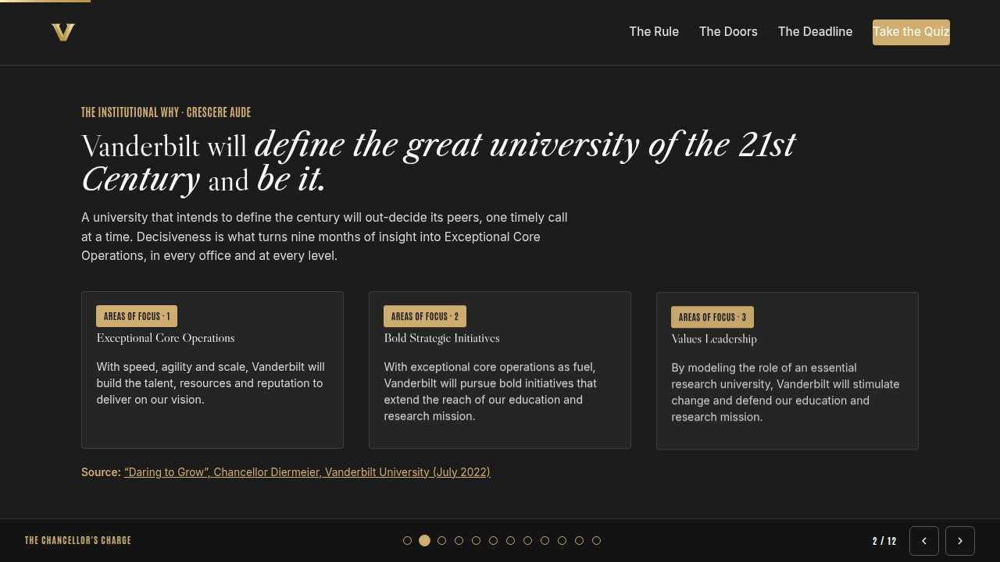
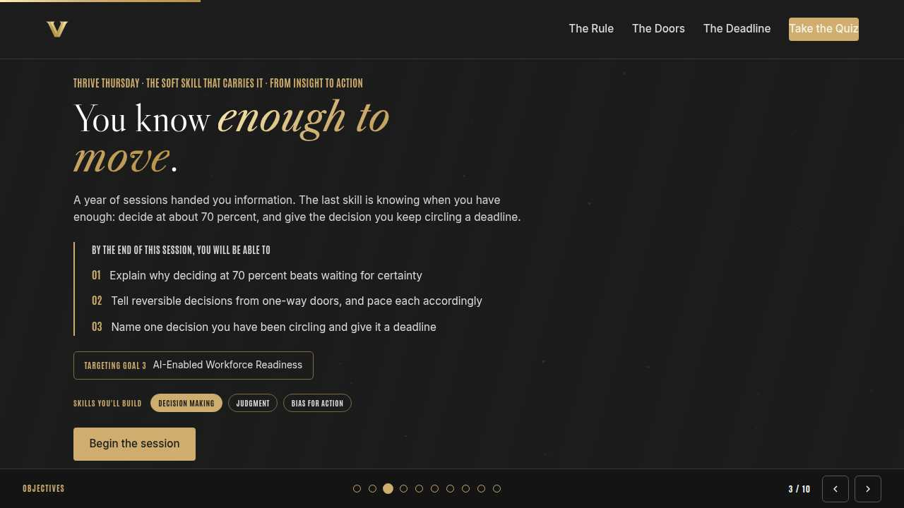
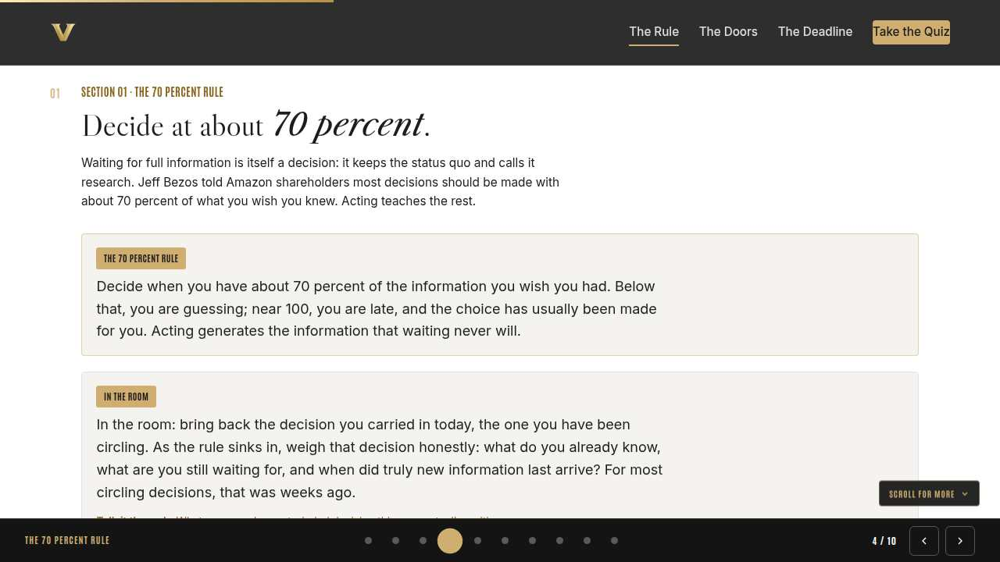
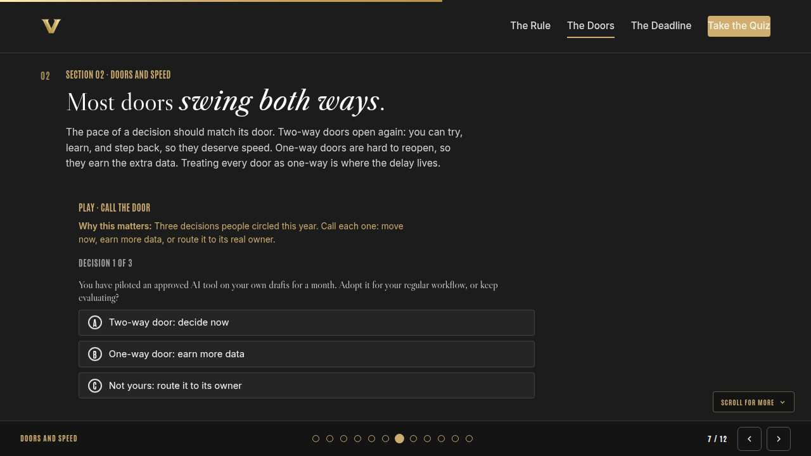
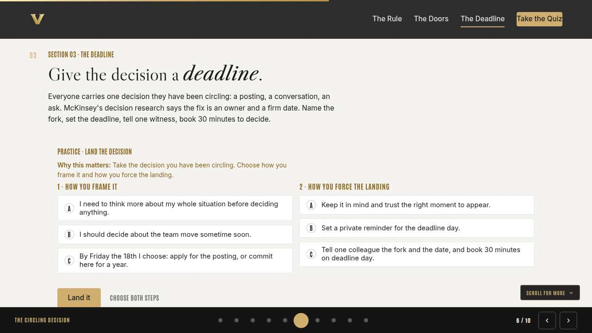
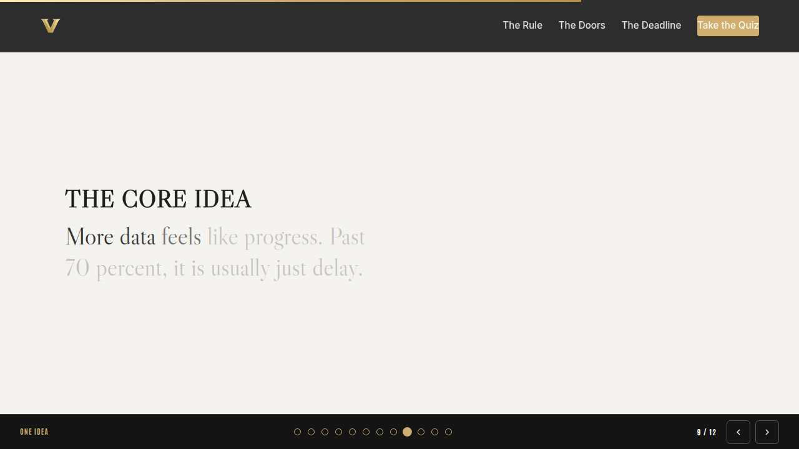
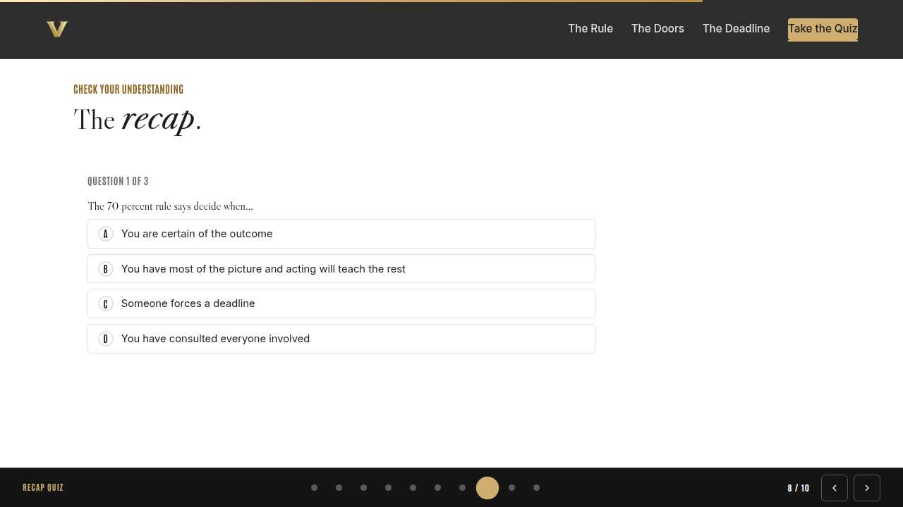
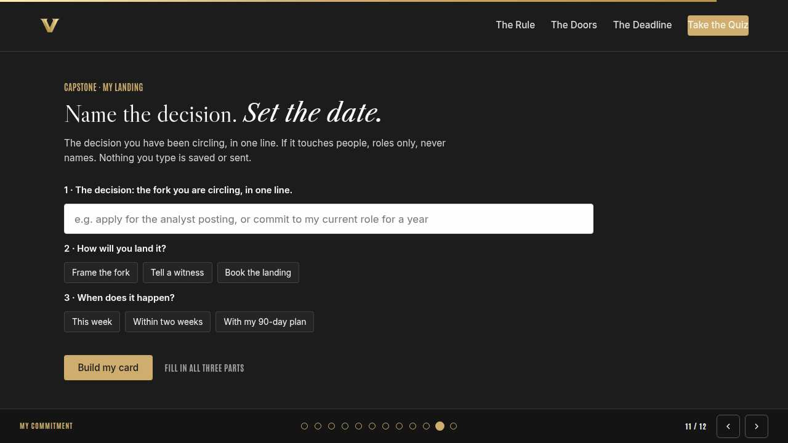
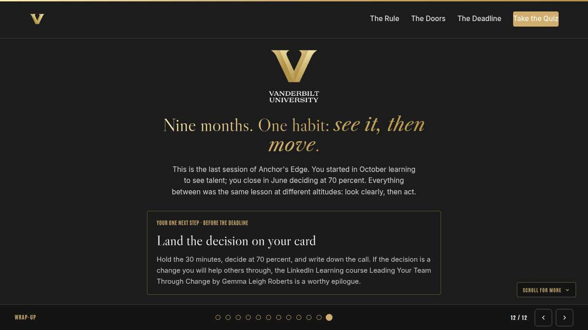

Vanderbilt · Anchor's Edge · ATD facilitator guide · print edition
Enough to Move, the facilitator guide

Run of show
| Screen | Full (min) | Core (min) |
|---|---|---|
| Welcome / QR | 2 | 1 |
| Why we're here | 2 | 1 |
| Objectives | 2 | 1 |
| The 70 percent rule | 9 | 6 |
| Doors and speed | 11 | 8 |
| The circling decision | 9 | 6 |
| The core idea | 1 | skip |
| Recap quiz | 4 | 3 |
| Capstone commitment | 4 | 3 |
| Closing | 1 | 1 |
| Total | 45 | 30 |
The goal this month serves
Goal 3, AI-Enabled Workforce Readiness.
Audience
All Vanderbilt staff in the Anchor's Edge weekly rhythm; no one is assumed to manage anyone. Works for 6 to 40 on a call; breakouts run in pairs. This is the last session of the series year; the series returns and grows next year. Expect some ceremony and leave two extra beats for the close.
Room setup
Virtual, instructor led: camera on, deck link in chat, breakouts of 2 available. Learners follow on their own screens via the welcome-slide link or QR. Nothing typed into the deck is saved or sent.
Materials
- Meeting platform with screen share and breakout rooms; deck link ready to paste in chat
- Facilitator machine with the facilitator edition open; notifications off
- Learners on their own devices with the learner link
- Chat open for share-outs; the capstone copy button pastes there cleanly
A week before
- Run the learner edition start to finish and do every interaction honestly; you will demo at least one live.
- Read this month's theme page on the Anchor's Edge dashboard so the goal tie-in is fluent.
- Send the invite with the learner link and one line on what to bring.
The day before
- Test screen share with the facilitator edition; confirm the notes rail is readable.
- Open the learner link on a second device; the QR must land there.
- Run the section interactions once so you can drive them without reading.
30 minutes before
- Welcome slide up as people join; link pasted in chat.
- Close every other tab; silence the machine.
- Breakout rooms pre-configured in pairs.
When things go sideways
If Screen share or the site fails mid-session: Paste the learner link in chat and narrate from your own browser; every interaction runs on learner devices without the share.
If Breakout rooms are unavailable: Run the breakout prompts as 60-second chat storms: everyone types their answer at once, you read the best three aloud.
If The 70 percent rule sparks pushback from compliance-heavy roles: Agree with them out loud: regulated calls and one-way doors sit outside the rule. Then bring it back: most of what we circle is reversible and unregulated, and that is where the rule lives.
If Emotions surface as the season closes: Let it breathe. Invite one-line reflections in chat on the year, read two aloud, and land the close warmly; a season close is allowed to feel like one.
Tough questions, ready answers
Q: Isn't deciding at 70 percent risky in a university, where mistakes are visible?
The rule travels with the door test. One-way, high-visibility calls still earn full diligence. The everyday calls we circle, the tools, drafts, meetings, and asks, are two-way doors, and the visible mistake there is usually the six-month delay, which everyone notices too.
Q: Can I use AI to help me decide?
As an input, yes, inside the light: green for public or generic questions, yellow for internal content in approved VU tools, and red, never, for private information about people. AI can widen your options and pressure test your reasoning; the call itself stays yours. Deciding is the habit we spent all year protecting.
Q: What happens to Anchor's Edge after this session?
The series year wraps, and Anchor's Edge comes back with room to grow. Your 90-day plan from Tuesday carries you to September, the capstone lab and this month's LinkedIn Learning course run through June, and the dashboard stays open for revisits. The habits were always the product.
Copy-paste templates
Pre-work invite (paste into the calendar invite)
Subject: Thursday, 45 minutes, and the close of the Anchor's Edge year. Bring the decision you have been circling; you will never be asked to share it. You will leave with a deadline you chose. Live and interactive; have the session link open on your own screen.
7-day pulse (send one week after)
Subject: Did it land? Three lines, reply whenever: 1) Did the decision on your landing card get decided? 2) What did moving at 70 percent teach you? 3) What is circling next, and when does it land?
After the session
Seven days out, send the pulse: 'Did the decision on your landing card get decided? What did moving at 70 percent teach you? What is circling next?' Count of landed decisions is the Level 3 metric, and the last one of the year.
Welcome / QR Full 2 min · Core 1
Get everyone into the deck on their own screen and set the tone: 45 minutes, live, hands on.
Say
“Welcome to Thrive Thursday. Scan the code or click the link in chat so this session runs on your screen too. Forty-five minutes, one focus: Decisiveness: moving from data to move.”
Do
- Slide up as people join; link pasted in chat every few minutes.
- State the norm once: type into your own screen, nothing you enter is saved or sent.
Watch for: People lurking without the deck open. The interactions only land if the deck is on their screen.
Transition: “Before the topic, thirty seconds on why Vanderbilt is asking for this hour.”

Why we're here Full 2 min · Core 1
Anchor the session in the Chancellor's charge and name the goal this month serves, inside one minute.
Say
“One sentence from the Chancellor sits over everything we do: Vanderbilt will define the great university of the 21st Century and be it. Timely deciding, in every office and at every level, is what turns a year of insight into Exceptional Core Operations. This month serves Goal 3, AI-Enabled Workforce Readiness.”
Do
- Read the mission line slowly, once; name the goal, once.
- No discussion here; the whole slide is under a minute.
Transition: “Here is what you will be able to do in 45 minutes.”

Objectives Full 2 min · Core 1
Set the contract for the session in about a minute; this slide is also the roadmap.
Say
“By the end of this session you will be able to: explain why deciding at 70 percent beats waiting for certainty; tell reversible decisions from one-way doors, and pace each accordingly; name one decision you have been circling and give it a deadline. We take them in order, and each one has something to practice.”
Do
- Read the three objectives briskly; they double as the agenda.
- Point at the goal chip once, then move.
Transition: “First objective.”

The 70 percent rule Full 9 min · Core 6
Reframe waiting as a decision with costs, and install deciding at sufficiency.
Say
“Last session of the year, and it is about the skill underneath every other one we taught: deciding. Waiting for complete information is itself a decision; it chooses the status quo and calls it diligence. Jeff Bezos put a number on the alternative in his 2016 letter to Amazon shareholders: most decisions should be made with around 70 percent of the information you wish you had, and waiting for 90 usually just means you are slow. So that is the rule we are installing. At about 70, decide. Acting brings the rest.”
Do
- Read the rule card once, slowly.
- Read the In the room card; give everyone a quiet moment with the decision they carried in.
- Lead the discussion: what was the wait buying? Then run the breakout on the delayed decision.
Ask
“What was your delayed decision actually waiting for?”
Expect:
- Certainty, honestly
- Permission, or someone else deciding first
Respond: Both answers are the point: certainty rarely comes, and permission usually arrives after someone moves. The 70 percent rule is permission you give yourself.
Debrief: Below 70, gather. Around 70, decide. Past 90, you are paying for comfort with time.
Watch for: The room hearing 'be reckless'. Keep saying it: the rule is about sufficiency, and the next section adds the safety rail for one-way doors.
Transition: “The rule needs one refinement: some doors only open once.”
Core path: Core: skip the breakout; take two delayed-decision stories in chat.

Doors and speed Full 11 min · Core 8
Teach reversible versus one-way decisions and match the pace to the door.
Say
“The refinement that keeps the 70 percent rule honest comes from the same shareholder letters: decisions are doors. Most swing both ways. You can walk through, look around, and walk back, so those deserve speed. A few are one-way, and they earn your slow, careful diligence. The trap for smart people is treating every door as one-way, which feels rigorous and is really just circling.”
Do
- Run Call the door live; everyone plays on their own screen.
- After round three, pause on the third label: routing a decision to its owner counts as deciding.
- Run the breakout: one live decision, call the door, argue the other side.
Ask
“Why does round three, the decision that was never yours, matter so much?”
Expect:
- A lot of circling is really unowned decisions
- Sending the recommendation is a relief
Respond: Yes. Packaging your 70 percent as a recommendation and handing it to the owner closes the loop. Deciding includes deciding it is theirs.
Debrief: Two questions set the pace: could I step back from this, and is it mine? Speed for two-way doors, diligence for one-way, a memo for the rest.
Watch for: People classifying obviously reversible calls as one-way to justify the delay. Ask gently: what exactly could you never undo?
Transition: “Now the one you came in carrying: the decision you have been circling.”
Core path: Core: run the trainer, skip the breakout, one voice on the debrief.

The circling decision Full 9 min · Core 6
Convert one circled decision into a framed fork with a deadline, a witness, and booked time.
Say
“Everyone in this room is circling something, a posting or a conversation you keep rescheduling. The circling feels like progress because the decision stays technically alive. So we end the year by landing one. Frame it as a fork, set a date, tell a witness, book the half hour. You already have your 70 percent; June is the deadline.”
Do
- Run Land the decision; two minutes for both choices.
- Invite one volunteer to share their fork, options only, no backstory.
- Point at the pattern: named fork, real date, witness, appointment.
Ask
“What makes telling a witness so much stronger than a private deadline?”
Expect:
- Private deadlines negotiate with you
- Being asked about it later is gentle pressure that works
Respond: Exactly. A witness converts a promise to yourself into a promise, full stop. Choose someone kind and reliable; that is all it takes.
Debrief: Fork, date, witness, appointment. Any decision that fits that shape lands; the ones that resist the shape usually belong to someone else.
Watch for: Backstory spirals when people share. Keep shares to the fork and the date; the room does not need the case file.
Transition: “Quick recap, then your landing card, and then we close the year.”
Core path: Core: everyone runs the builder solo; skip the volunteer share.

The core idea Full 1 min · Core skip
Land the one sentence the session exists to install.
Say
“If you keep one sentence from today, this is it. Read it once, out loud: Decide at about 70 percent, and give the decision you keep circling a deadline.”
Do
- Pause two beats after reading; the word animation carries it.
Transition: “The recap makes it stick.”
Core path: Core: pass through in stride; the sentence reads itself.

Recap quiz Full 4 min · Core 3
Score the learning while it is fresh; wrong answers are teaching moments, not failures.
Say
“Three questions, on your own screen. Answer honestly; the explanations are where the learning sticks.”
Do
- Give the room 90 seconds to run it individually.
- Ask for a show of results in chat: how many got 3 of 3?
- Read out the explanation for whichever question drew the most misses.
Watch for: Rushing past the why lines. The explanations carry the teaching.
Transition: “Now point it at your real week.”

Capstone commitment Full 4 min · Core 3
Convert the session into one named, dated action per person.
Say
“Last capstone of the year. The decision you have been circling, one line, roles only if it touches people. Frame the fork, pick how you land it, set the window, build the card. Copy it somewhere you will see it on deadline day. Two minutes, quiet, and make this one count.”
Do
- Two quiet minutes; everyone builds their own card.
- Invite two or three volunteers to read their card aloud or paste it in chat.
- Remind: copy the card somewhere you will see it this week.
Watch for: Vague entries. Nudge for a name-able situation and a real date.
Transition: “Last slide.”

Closing Full 1 min · Core 1
End with the next step and where this thread continues.
Say
“That is the week: Monday your managers learned the four workforce moves, Tuesday you built a 90-day plan, and today you set a deadline. And that is the year. This series opened by asking you to see the talent around you. Since then you have learned to read teams, coach, use AI inside the lines, and now to act on what you see. The season wraps here; the habits have no end date, and the rhythm comes back around with room to grow. Land the decision on your card, run your 90 days, and if you want one more companion, Leading Your Team Through Change and the navigator-led action-planning lab are open all month. Thank you for a year of showing up. Go decide something.”
Do
- Point at the next-step card; one sentence.
- Name the rest of the week's rhythm: the other sessions echo this month's theme.
Generated from facilitator/notes.json. The on-screen facilitator edition lives at ./ alongside this guide.